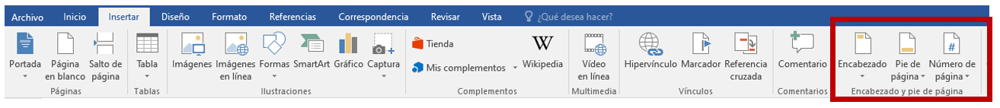
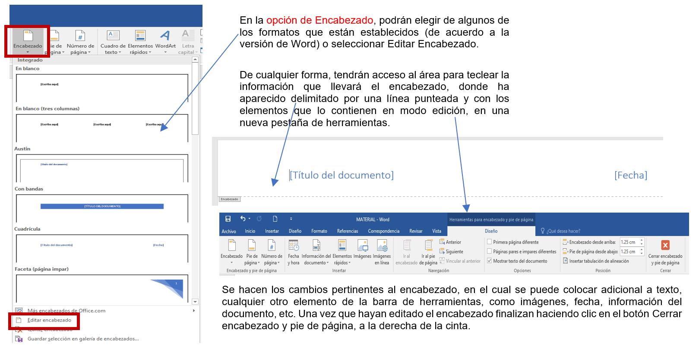
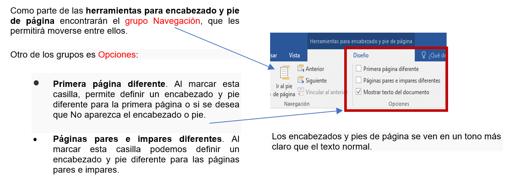
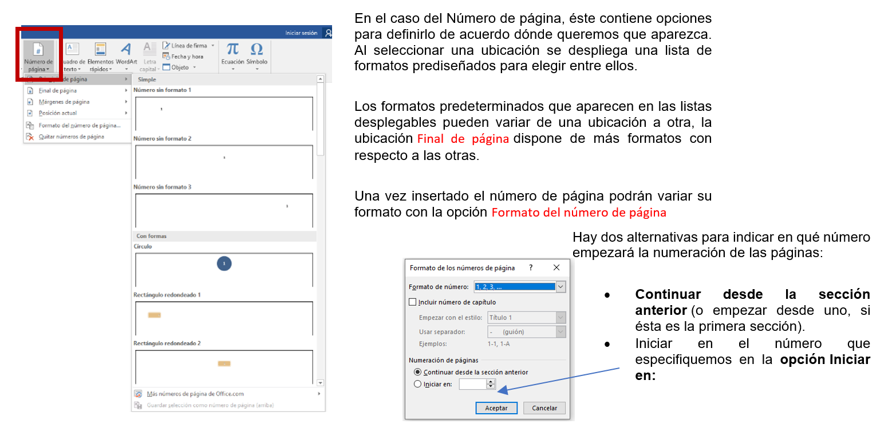

Los encabezados y pies de página son texto y/o imágenes que se colocan en el área del margen superior e inferior respectivamente. Se caracterizan por aparecer por lo regular en todas las páginas de un documento. Se utilizan para agregar títulos, nombre del autor, logotipos, numeración, etcétera.

Para crearlos o modificarlos se debe hacer clic en alguno de los márgenes o en los dos botones Pie de página o Encabezado.


Trabajar con las opciones de pie de página es similar al encabezado, solamente van a variar los estilos predefinidos y la posición donde se visualizará.
.
Word numera correlativamente las páginas de un documento para poder referenciarlas, pero este número no aparece hasta que le solicitemos insertar, desde la opción Número de página.
